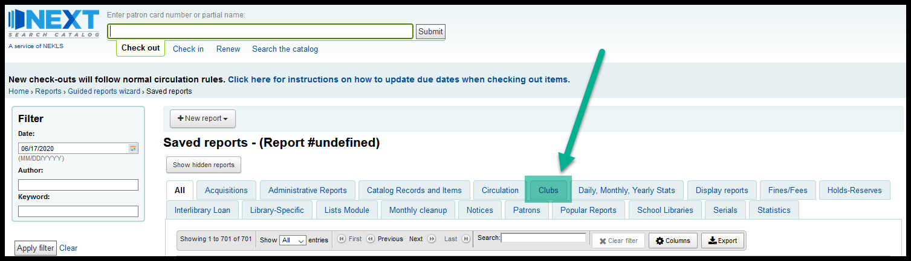
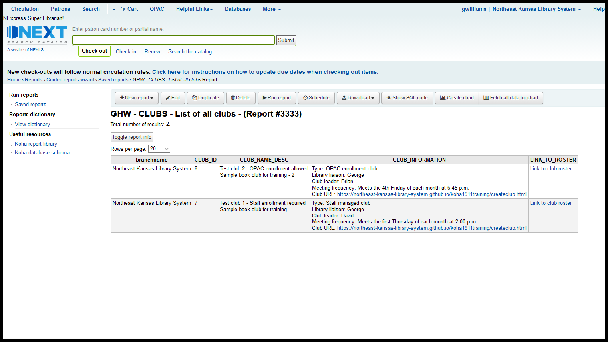
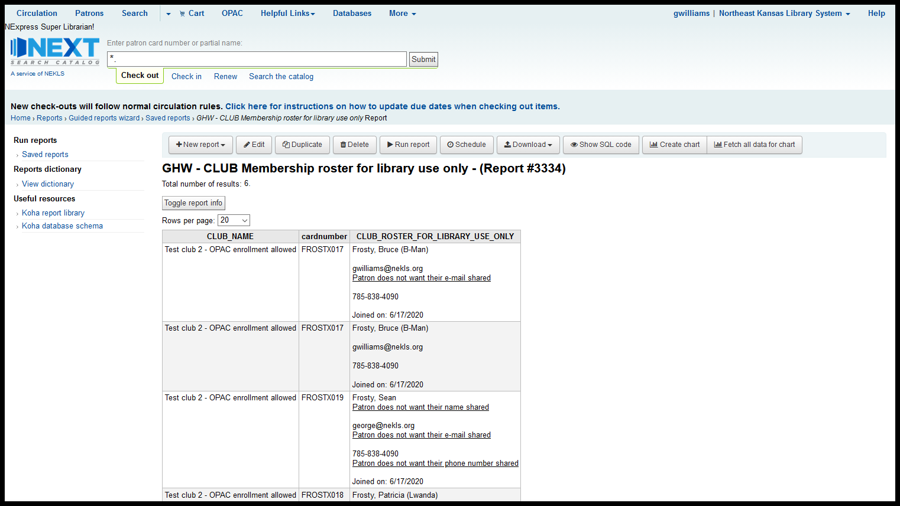
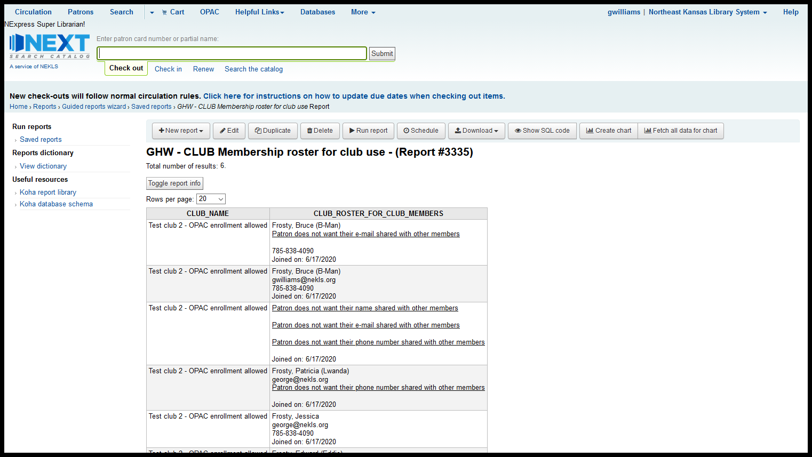

Club reports¶
Currently there are 3 reports for working with clubs that can be found on the Clubs tab on the “Use saved” reports page.

Report 3333¶
This report generates a list of clubs at a library. This will show:
Which library “owns” this club
The club ID number
The club name and description fields
Other information about the club (information specified when the club was created)
A link that will take you to report 3335 (Club membeship roster for club use)

Report 3334¶
This report generates a club-roster for library use only. This will show:
The name of the club
The patron’s card number
Full informaiton about each member - including
Name
Whether or not they want their name shared with other members
e-mail address
Whether or not they want their e-mail address shared with other members
Phone number
Whether or not they want their phone number shared with other members
The date they joined the club
In order to run this report, you must get the club ID number from report 3333

Report 3335¶
This report generates a club-roster that can be shared with other club members. This will show:
The name of the club
Informaiton about each member *IF* the patrons answered *YES* to questions about sharing that information
Name
e-mail address
Phone number
The date they joined the club
If the patron answered “No” to any of the enrollment questions when joining the club, the informaiton they asked not to be shared will be replaced with a message saying that the patron does not wish to share that informaiton with other club members.

Notes¶
Work is being done to add to these reports. Reports for self-dis-enrollment are in progress, and reports for club demographic informaiton (age and sex of club members, etc.)